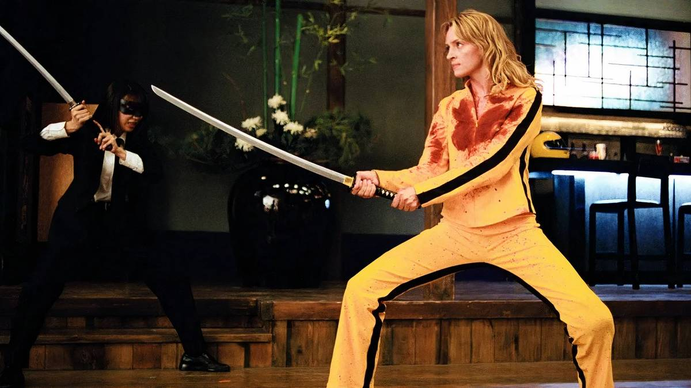

5 Killer Cuts That Make Tarantino's Kill Bill His Best Film
{kind=link}

Last week, Quentin Tarantino fans were greeted with news that’s been a long time coming. This holiday season, Kill Bill: The Whole Bloody Affair will be released in cinemas for the first time, which combines both installments of the Kill Bill saga into one complete film. It immediately got us thinking about the film’s incredible soundtrack, which is arguably Tarantino’s best to date.
Unlock Personalized Content &
Exclusive Features For Free
- Engage in discussions in Threads
- Follow and Like top authors, topics, and trends
- Browse with fewer ads across the site
- Personalize your profile to showcase your activity
- Get a content feed tailored to your interests
By creating an account, you agree to our Terms of Use and Privacy Policy. You also agree to receive our newsletters; you can unsubscribe any time.
Log in or Create an Account For Free
Create an account
Please provide your email address to finish creating your account.
*Required: 8 chars, 1 capital letter, 1 number
By creating an account, you agree to our Terms of Use and Privacy Policy. You also agree to receive our newsletters; you can unsubscribe any time.
Tarantino is renowned for his approach to curating a soundtrack, often nearly eschewing original compositions altogether in favor of a carefully curated selection of pre-existing music. The stylistic action of the Kill Bill saga fuses beautifully with this approach, and it’s packed with an iconic selection of needle drops and obscure deep cuts that function on multiple levels.
While The Whole Bloody Affair includes at least some unseen footage (including a lauded seven-and-a-half-minute animation sequence), the film’s superb soundtrack is likely to remain intact. The Kill Bill saga is wall-to-wall with inspired musical choices, making it nigh impossible to list every single one. However, these tracks stand out for being particularly iconic.
“Battle Without Honor Or Humanity” By Tomoyasu Hotei
If you think for a second of Kill Bill and picture it in your mind’s eye, is it even possible to do so without it being scored by “Battle Without Honor Or Humanity”? It’s the moment when Lucy Liu’s O-Ren Ishii makes her grand entrance, criminal entourage in tow, striding confidently as the song’s punchy brass section kicks in.
Tarantino struck cinematic gold when he selected “Battle Without Honor Or Humanity,” a previously somewhat obscure offering from Japan’s Tomoyasu Hotei that appeared on his Electric Samurai album back in 2000. Its inclusion in Kill Bill rocketed the song to worldwide fame, and it's since returned for another appearance in films, TV series, and commercials.
“Bang Bang (My Baby Shot Me Down)” By Nancy Sinatra
Another immaculate Kill Bill selection, perfect enough that you'll swear this 1966 Nancy Sinatra classic was written specifically for the film. It’s placed by Tarantino in the grueling opening scene of Vol. 1, when Uma Thurman lies beaten and bloody, gazing up at her killers, before an abrupt gunshot to the head sees the film cut to black.
“Bang bang, he shot me down,” croons Nancy Sinatra in her haunting, minimalist interpretation that strips back Cher’s original to its emotional core. "Bang bang, I hit the ground. Bang bang, that awful sound..." Are we even entirely sure that Tarantino didn’t write Kill Bill as a cinematic adaptation of “Bang Bang (My Baby Shot Me Down)?”
“Ironside” By Quincy Jones
If you think of the wailing siren call that opens Quincy Jones’ “Ironside,” the theme from the '60s NBC television series of the same name, you might also recognize it as a recurring sample from hip-hop all the way back to the ‘90s, now essentially a heady stinger that signifies suspense, intrigue, and mortal danger.
The “Ironside” siren sounds early in Kill Bill Vol. 1 when Vivica A. Fox opens her suburban front door to discover a vengeful Uma Thurman on the other side. Mortal danger is something that indeed is in play, and “Ironside” represents one of the most self-consciously meta selections that Tarantino has included in one of his soundtracks, possibly ever.
“The Lonely Shepherd” by Gheorghe Zamfir
“The Lonely Shepherd” might be the postmodern needle drop to ever make an appearance in a Tarantino film. While the name of the song itself might not ring familiar, the sound of the song’s panflute ringing out, performed to lasting perfection by Gheorghe Zamfir, certainly will.
The song’s ethereal, sorrowful pan flute melody certainly carries a particular emotional weight, but it’s also proved so utterly ubiquitous in pop culture since its 1977 release that it’s now essentially a meme. In Kill Bill: Volume 1, it accompanies a genuinely melancholic flashback scene, but the appearance of the song also represents a sly wink and a nod from Tarantino.
“Twisted Nerve” By Bernard Herrmann
It’s a tough final choice out of a field of many winners, because, after all, the Kill Bill saga includes several Ennio Morricone deep cuts, a particularly effective nod to Johnny Cash, and even a full-blown live performance by Japanese punk band The 5.6.7.8’s.
However, the melody of “Twisted Nerve”, whistled by an utterly villainous Daryl Hannah, proved so effective that it took on a life of its own in popular culture. Whistled by Hannah as she walks the hospital corridors, disguised as a nurse and carrying a poisonous syringe, “Twisted Nerve” is now instantly recognizable as cinematic shorthand for sinister intentions with a calm exterior.